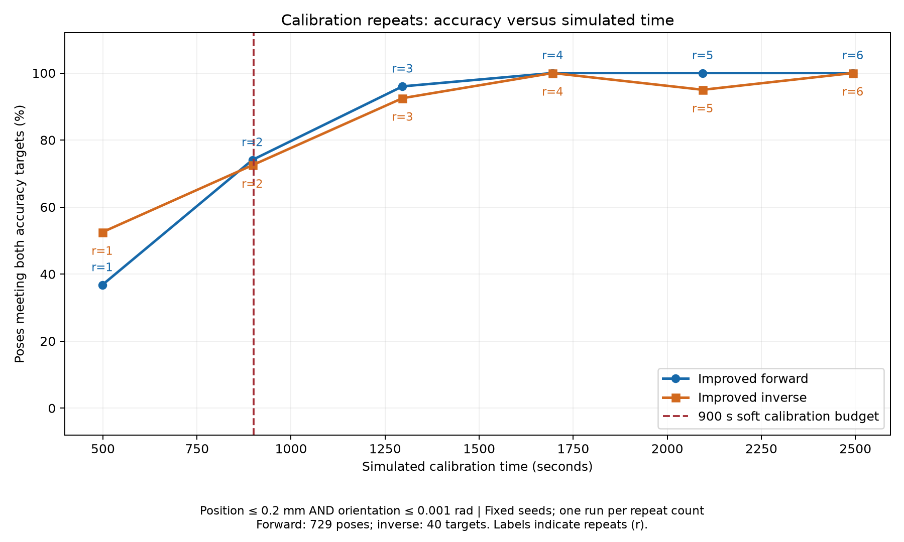

Robot Kinematic Calibration
How much measurement effort does accurate robot positioning require? I developed a calibration pipeline for a simulated six-joint robot and optical tracker, then evaluated the tradeoff between repeated measurements and positioning accuracy.
Explore the results ↓More measurements. A longer calibration.
Four repeats were the first tested configuration to meet both accuracy thresholds at every forward pose and inverse target. Two repeats stayed within the 900-second soft budget, with lower pass rates.


From observations to a corrected model.
I implemented calibration-pose planning, repeated measurement collection, frame registration, and a corrected forward-kinematics model.
SciPy nonlinear least squares estimates corrections for joint distortion, axis alignment, robot-base placement, and tool placement. My work also included fitting, evaluation, and numerical debugging.
- 1. PlanChoose calibration poses.
- 2. MeasureCollect repeated tracker observations.
- 3. FitRegister frames and estimate model corrections.
- 4. EvaluateCheck pose prediction and inverse-kinematics positioning.
One change: measurement repeats.
I compared one to six calibration repeats while keeping seeds, geometry, model settings, and evaluation targets fixed. Forward evaluation tested pose prediction at 729 poses; inverse evaluation tested positioning accuracy at 40 targets.
A pose passed only when both position error was ≤ 0.2 mm and orientation error was ≤ 0.001 rad.
| Repeats | Simulated calibration time | Forward pass rate | Inverse pass rate |
|---|---|---|---|
| 1 | 498.3 s | 36.8% | 52.5% |
| 2 | 897.3 s | 74.1% | 72.5% |
| 3 | 1296.3 s | 96.0% | 92.5% |
| 4 | 1695.3 s | 100% | 100% |
| 5 | 2094.4 s | 100% | 95.0% |
| 6 | 2493.4 s | 100% | 100% |
Shaded rows mark the two-repeat budget tradeoff and the first configuration with full pass rates. Simulated calibration time is distinct from elapsed computation time, recorded separately as wall_time_s in the CSV.
Download the results CSV ↓Accuracy has a measurement cost.
Additional measurements generally improved accuracy while increasing calibration time. At 897.3 seconds, two repeats stayed within the soft budget, achieving forward and inverse pass rates of 74.1% and 72.5%.
Four repeats achieved 100% on both evaluations, but required 1695.3 seconds of simulated calibration time, exceeding the budget.
The inverse pass rate dipped to 95.0% at five repeats, showing that additional measurements do not guarantee monotonic improvement. These results describe one fixed-seed simulation comparison; they do not establish a universal repeat count or performance on physical hardware.
Implementation and foundations.
The implementation was validated with 37 passing unit tests. The forward and inverse pass rates above are separate experimental accuracy measurements.
This project was developed in Computer Integrated Surgery. The course provided the simulator, nominal robot model, and inverse solver. My contributions were the calibration implementation, fitting, evaluation, and numerical debugging.
Technologies
Python · NumPy · SciPy · Jupyter · pytest · Rigid-body transformations · Nonlinear optimization · SVD